Summary
This experiment investigates laundry stain removal. Plackett-Burman screening of water temperature, detergent dose, soak time, agitation level, bleach type, and spin speed for stain removal and fabric care.
The design varies 6 factors: water temp c (C), ranging from 20 to 60, detergent ml (mL), ranging from 15 to 60, soak min (min), ranging from 0 to 30, agitation (level), ranging from 1 to 5, bleach ml (mL), ranging from 0 to 30, and spin rpm (rpm), ranging from 600 to 1400. The goal is to optimize 2 responses: stain removal pct (%) (maximize) and fabric wear (pts) (minimize). Fixed conditions held constant across all runs include load size = medium, fabric = cotton.
A Plackett-Burman screening design was used to efficiently test 6 factors in only 8 runs. This design assumes interactions are negligible and focuses on identifying the most influential main effects.
Key Findings
For stain removal pct, the most influential factors were water temp c (41.1%), soak min (24.2%), spin rpm (12.6%). The best observed value was 99.0 (at water temp c = 60, detergent ml = 15, soak min = 0).
For fabric wear, the most influential factors were soak min (35.2%), water temp c (24.6%), agitation (18.6%). The best observed value was 1.1 (at water temp c = 60, detergent ml = 15, soak min = 0).
Recommended Next Steps
- Follow up with a response surface design (CCD or Box-Behnken) on the top 3–4 factors to model curvature and find the true optimum.
- Consider whether any fixed factors should be varied in a future study.
- The screening results can guide factor reduction — drop factors contributing less than 5% and re-run with a smaller, more focused design.
Experimental Setup
Factors
| Factor | Low | High | Unit |
|---|
water_temp_c | 20 | 60 | C |
detergent_ml | 15 | 60 | mL |
soak_min | 0 | 30 | min |
agitation | 1 | 5 | level |
bleach_ml | 0 | 30 | mL |
spin_rpm | 600 | 1400 | rpm |
Fixed: load_size = medium, fabric = cotton
Responses
| Response | Direction | Unit |
|---|
stain_removal_pct | ↑ maximize | % |
fabric_wear | ↓ minimize | pts |
Configuration
{
"metadata": {
"name": "Laundry Stain Removal",
"description": "Plackett-Burman screening of water temperature, detergent dose, soak time, agitation level, bleach type, and spin speed for stain removal and fabric care"
},
"factors": [
{
"name": "water_temp_c",
"levels": [
"20",
"60"
],
"type": "continuous",
"unit": "C"
},
{
"name": "detergent_ml",
"levels": [
"15",
"60"
],
"type": "continuous",
"unit": "mL"
},
{
"name": "soak_min",
"levels": [
"0",
"30"
],
"type": "continuous",
"unit": "min"
},
{
"name": "agitation",
"levels": [
"1",
"5"
],
"type": "continuous",
"unit": "level"
},
{
"name": "bleach_ml",
"levels": [
"0",
"30"
],
"type": "continuous",
"unit": "mL"
},
{
"name": "spin_rpm",
"levels": [
"600",
"1400"
],
"type": "continuous",
"unit": "rpm"
}
],
"fixed_factors": {
"load_size": "medium",
"fabric": "cotton"
},
"responses": [
{
"name": "stain_removal_pct",
"optimize": "maximize",
"unit": "%"
},
{
"name": "fabric_wear",
"optimize": "minimize",
"unit": "pts"
}
],
"settings": {
"operation": "plackett_burman",
"test_script": "use_cases/139_laundry_stain_removal/sim.sh"
}
}
Experimental Matrix
The Plackett-Burman Design produces 8 runs. Each row is one experiment with specific factor settings.
| Run | water_temp_c | detergent_ml | soak_min | agitation | bleach_ml | spin_rpm |
|---|
| 1 | 60 | 60 | 30 | 1 | 0 | 600 |
| 2 | 20 | 15 | 30 | 5 | 0 | 600 |
| 3 | 20 | 60 | 0 | 5 | 0 | 1400 |
| 4 | 60 | 60 | 30 | 5 | 30 | 1400 |
| 5 | 20 | 60 | 0 | 1 | 30 | 600 |
| 6 | 60 | 15 | 0 | 5 | 30 | 600 |
| 7 | 20 | 15 | 30 | 1 | 30 | 1400 |
| 8 | 60 | 15 | 0 | 1 | 0 | 1400 |
Step-by-Step Workflow
1
Preview the design
$ python doe.py info --config use_cases/139_laundry_stain_removal/config.json
2
Generate the runner script
$ python doe.py generate --config use_cases/139_laundry_stain_removal/config.json \
--output use_cases/139_laundry_stain_removal/results/run.sh --seed 42
3
Execute the experiments
$ bash use_cases/139_laundry_stain_removal/results/run.sh
4
Analyze results
$ python doe.py analyze --config use_cases/139_laundry_stain_removal/config.json
5
Get optimization recommendations
$ python doe.py optimize --config use_cases/139_laundry_stain_removal/config.json
6
Generate the HTML report
$ python doe.py report --config use_cases/139_laundry_stain_removal/config.json \
--output use_cases/139_laundry_stain_removal/results/report.html
Features Exercised
| Feature | Value |
|---|
| Design type | plackett_burman |
| Factor types | continuous (all 6) |
| Arg style | double-dash |
| Responses | 2 (stain_removal_pct ↑, fabric_wear ↓) |
| Total runs | 8 |
Analysis Results
Generated from actual experiment runs using the DOE Helper Tool.
Response: stain_removal_pct
Top factors: water_temp_c (41.1%), soak_min (24.2%), spin_rpm (12.6%).
Pareto Chart

Main Effects Plot

Response: fabric_wear
Top factors: soak_min (35.2%), water_temp_c (24.6%), agitation (18.6%).
Pareto Chart

Main Effects Plot
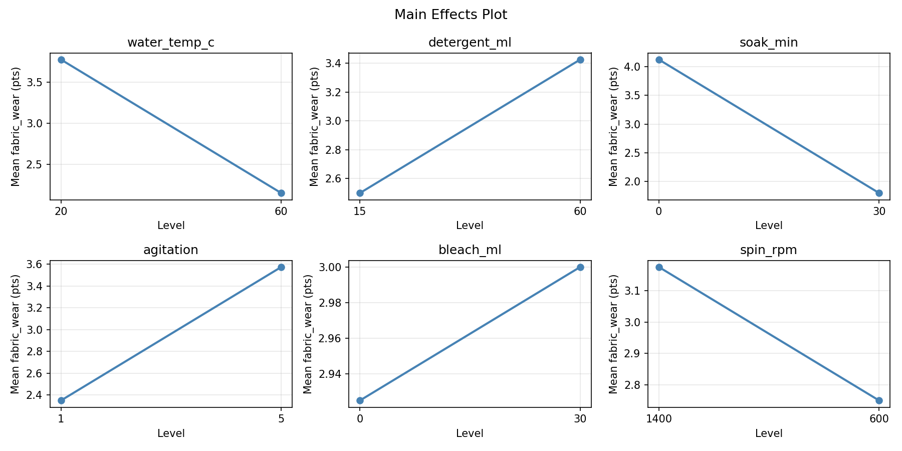
Response Surface Plots
3D surfaces fitted with quadratic RSM. Red dots are observed data points.
fabric wear agitation vs bleach ml

fabric wear agitation vs spin rpm
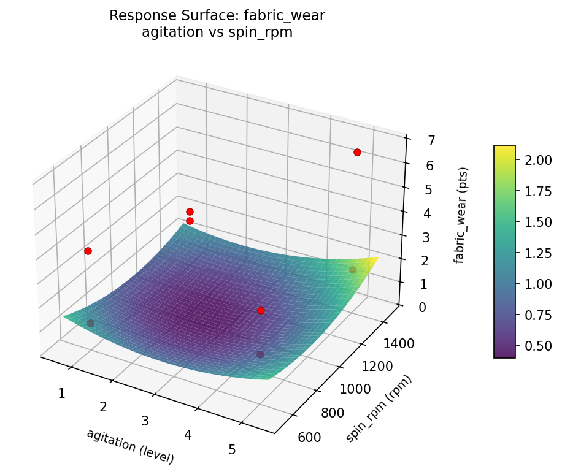
fabric wear bleach ml vs spin rpm
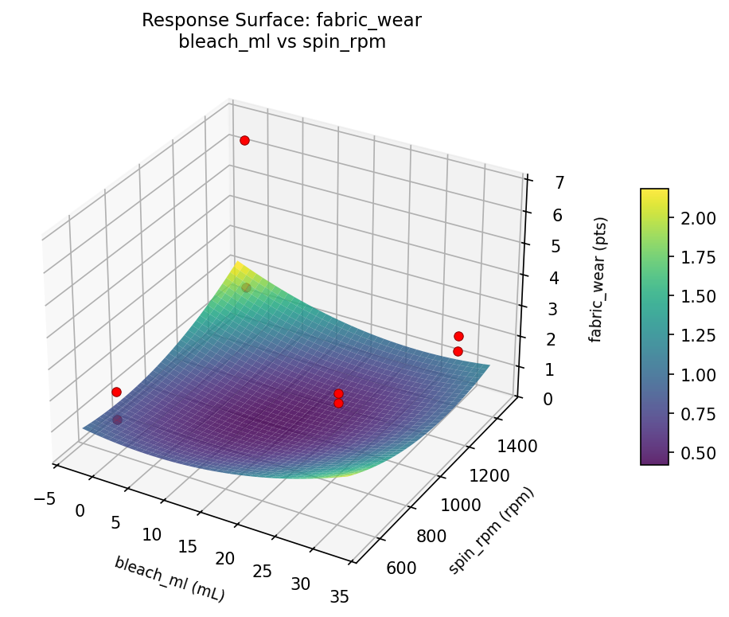
fabric wear detergent ml vs agitation

fabric wear detergent ml vs bleach ml
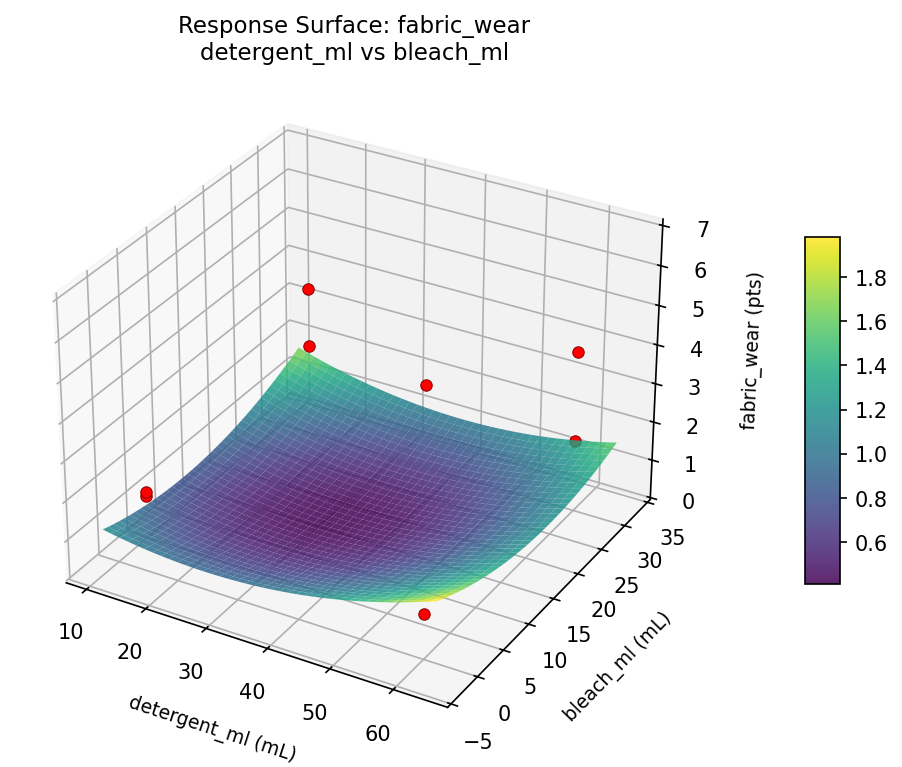
fabric wear detergent ml vs soak min
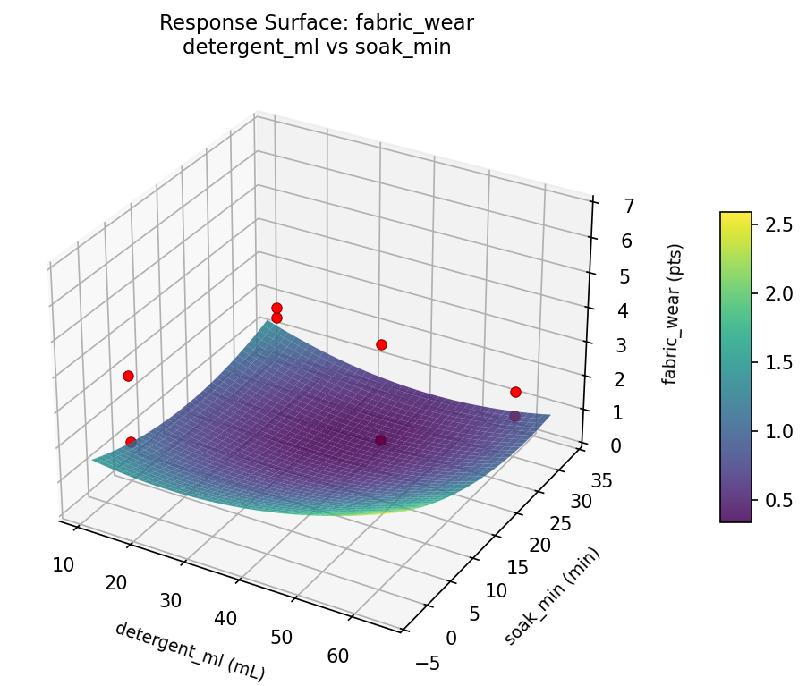
fabric wear detergent ml vs spin rpm

fabric wear soak min vs agitation

fabric wear soak min vs bleach ml
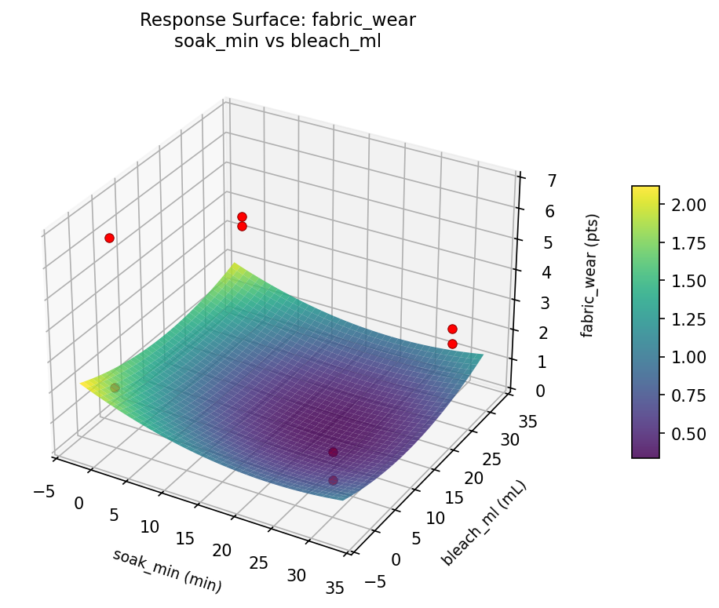
fabric wear soak min vs spin rpm

fabric wear water temp c vs agitation

fabric wear water temp c vs bleach ml
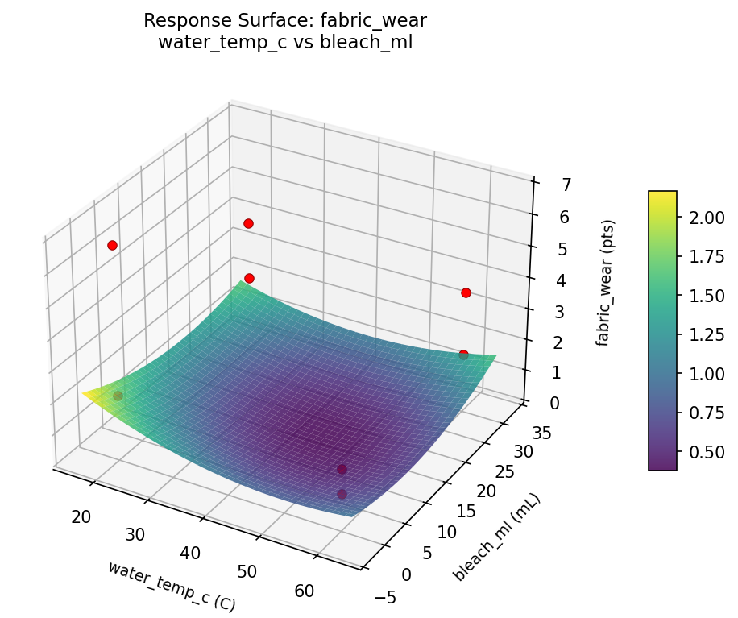
fabric wear water temp c vs detergent ml
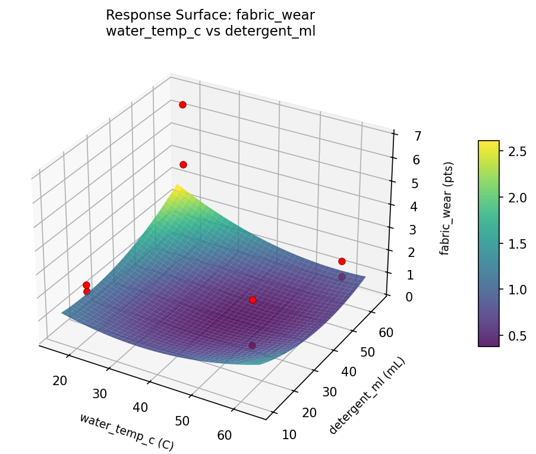
fabric wear water temp c vs soak min

fabric wear water temp c vs spin rpm

stain removal pct agitation vs bleach ml

stain removal pct agitation vs spin rpm
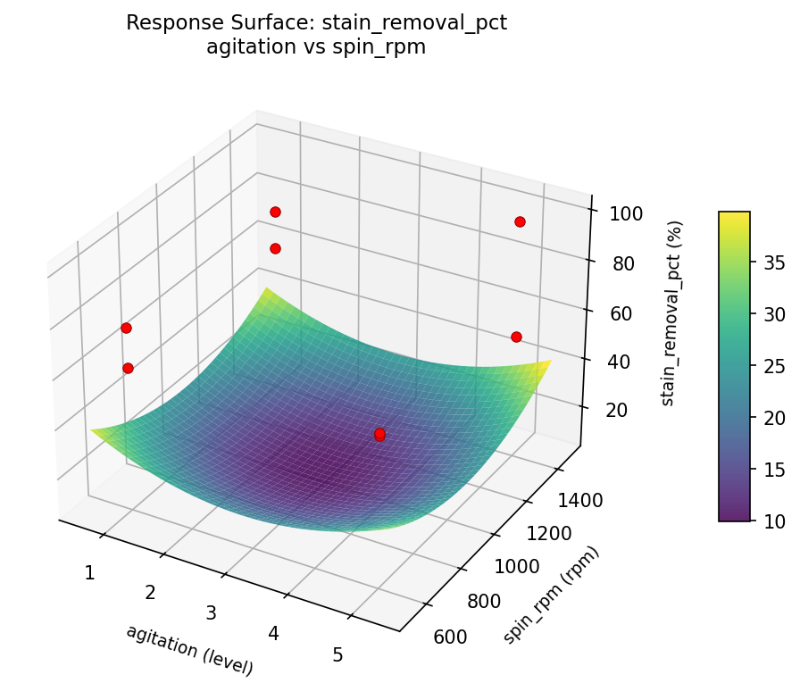
stain removal pct bleach ml vs spin rpm
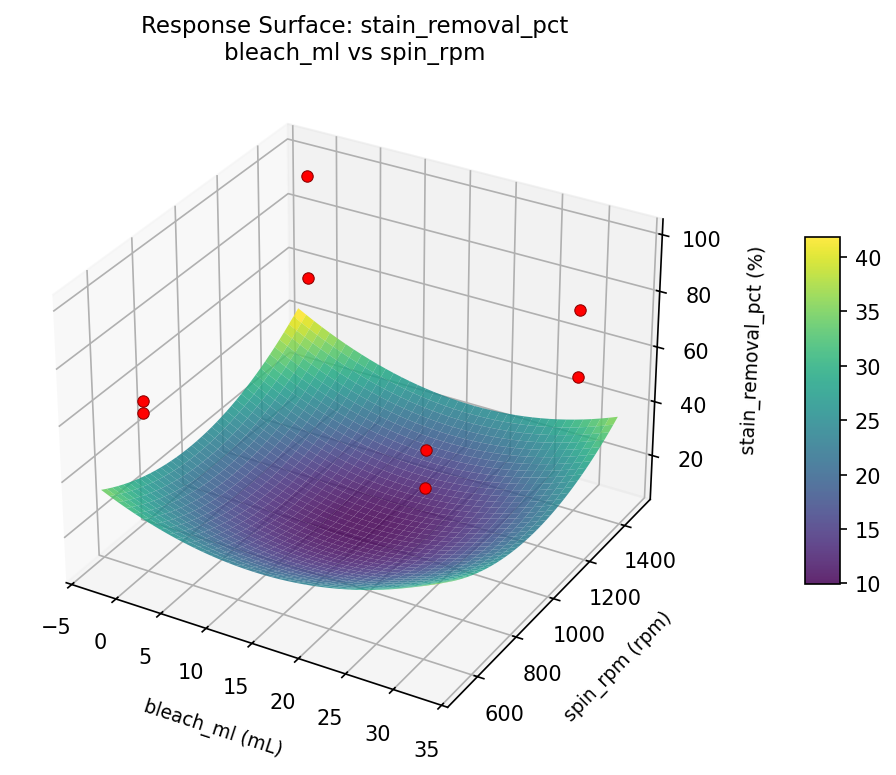
stain removal pct detergent ml vs agitation

stain removal pct detergent ml vs bleach ml
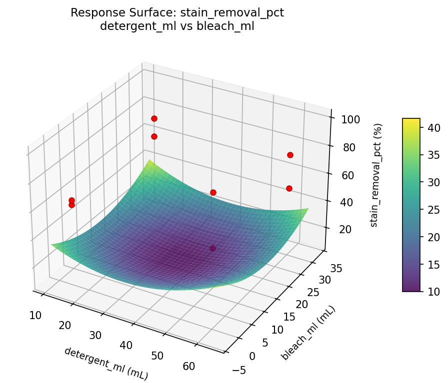
stain removal pct detergent ml vs soak min

stain removal pct detergent ml vs spin rpm

stain removal pct soak min vs agitation

stain removal pct soak min vs bleach ml

stain removal pct soak min vs spin rpm

stain removal pct water temp c vs agitation

stain removal pct water temp c vs bleach ml

stain removal pct water temp c vs detergent ml
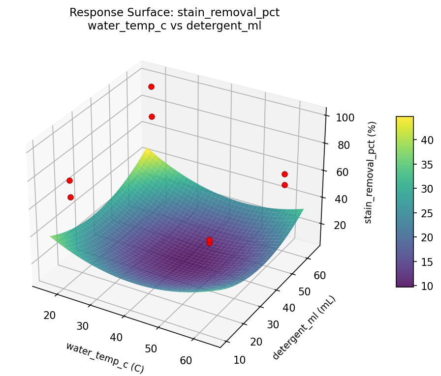
stain removal pct water temp c vs soak min
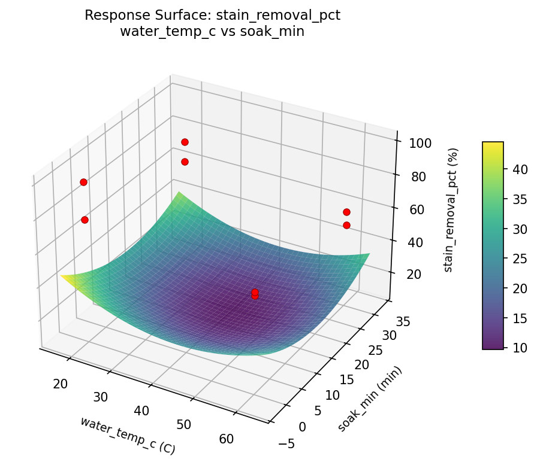
stain removal pct water temp c vs spin rpm

Full Analysis Output
RSM surface: rsm_stain_removal_pct_water_temp_c_vs_detergent_ml.png
RSM surface: rsm_stain_removal_pct_water_temp_c_vs_soak_min.png
RSM surface: rsm_stain_removal_pct_water_temp_c_vs_agitation.png
RSM surface: rsm_stain_removal_pct_water_temp_c_vs_bleach_ml.png
RSM surface: rsm_stain_removal_pct_water_temp_c_vs_spin_rpm.png
RSM surface: rsm_stain_removal_pct_detergent_ml_vs_soak_min.png
RSM surface: rsm_stain_removal_pct_detergent_ml_vs_agitation.png
RSM surface: rsm_stain_removal_pct_detergent_ml_vs_bleach_ml.png
RSM surface: rsm_stain_removal_pct_detergent_ml_vs_spin_rpm.png
RSM surface: rsm_stain_removal_pct_soak_min_vs_agitation.png
RSM surface: rsm_stain_removal_pct_soak_min_vs_bleach_ml.png
RSM surface: rsm_stain_removal_pct_soak_min_vs_spin_rpm.png
RSM surface: rsm_stain_removal_pct_agitation_vs_bleach_ml.png
RSM surface: rsm_stain_removal_pct_agitation_vs_spin_rpm.png
RSM surface: rsm_stain_removal_pct_bleach_ml_vs_spin_rpm.png
RSM surface: rsm_fabric_wear_water_temp_c_vs_detergent_ml.png
RSM surface: rsm_fabric_wear_water_temp_c_vs_soak_min.png
RSM surface: rsm_fabric_wear_water_temp_c_vs_agitation.png
RSM surface: rsm_fabric_wear_water_temp_c_vs_bleach_ml.png
RSM surface: rsm_fabric_wear_water_temp_c_vs_spin_rpm.png
RSM surface: rsm_fabric_wear_detergent_ml_vs_soak_min.png
RSM surface: rsm_fabric_wear_detergent_ml_vs_agitation.png
RSM surface: rsm_fabric_wear_detergent_ml_vs_bleach_ml.png
RSM surface: rsm_fabric_wear_detergent_ml_vs_spin_rpm.png
RSM surface: rsm_fabric_wear_soak_min_vs_agitation.png
RSM surface: rsm_fabric_wear_soak_min_vs_bleach_ml.png
RSM surface: rsm_fabric_wear_soak_min_vs_spin_rpm.png
RSM surface: rsm_fabric_wear_agitation_vs_bleach_ml.png
RSM surface: rsm_fabric_wear_agitation_vs_spin_rpm.png
RSM surface: rsm_fabric_wear_bleach_ml_vs_spin_rpm.png
=== Main Effects: stain_removal_pct ===
Factor Effect Std Error % Contribution
--------------------------------------------------------------
water_temp_c -19.5000 5.0595 41.1%
soak_min -11.5000 5.0595 24.2%
spin_rpm -6.0000 5.0595 12.6%
detergent_ml 5.5000 5.0595 11.6%
bleach_ml -4.0000 5.0595 8.4%
agitation 1.0000 5.0595 2.1%
=== Interaction Effects: stain_removal_pct ===
Factor A Factor B Interaction % Contribution
------------------------------------------------------------------------
detergent_ml soak_min -19.5000 15.2%
agitation bleach_ml -19.5000 15.2%
water_temp_c detergent_ml -11.5000 9.0%
bleach_ml spin_rpm 11.5000 9.0%
water_temp_c spin_rpm 11.0000 8.6%
detergent_ml bleach_ml -11.0000 8.6%
soak_min agitation -11.0000 8.6%
detergent_ml agitation 6.0000 4.7%
soak_min bleach_ml 6.0000 4.7%
water_temp_c soak_min 5.5000 4.3%
agitation spin_rpm -5.5000 4.3%
water_temp_c agitation -4.0000 3.1%
soak_min spin_rpm 4.0000 3.1%
water_temp_c bleach_ml 1.0000 0.8%
detergent_ml spin_rpm -1.0000 0.8%
=== Summary Statistics: stain_removal_pct ===
water_temp_c:
Level N Mean Std Min Max
------------------------------------------------------------
20 4 79.5000 14.1774 65.0000 99.0000
60 4 60.0000 4.8305 53.0000 64.0000
detergent_ml:
Level N Mean Std Min Max
------------------------------------------------------------
15 4 67.0000 6.7823 62.0000 77.0000
60 4 72.5000 20.2896 53.0000 99.0000
soak_min:
Level N Mean Std Min Max
------------------------------------------------------------
0 4 75.5000 17.0196 62.0000 99.0000
30 4 64.0000 10.0000 53.0000 77.0000
agitation:
Level N Mean Std Min Max
------------------------------------------------------------
1 4 69.2500 8.9582 61.0000 77.0000
5 4 70.2500 19.9228 53.0000 99.0000
bleach_ml:
Level N Mean Std Min Max
------------------------------------------------------------
0 4 71.7500 18.2460 61.0000 99.0000
30 4 67.7500 11.5866 53.0000 77.0000
spin_rpm:
Level N Mean Std Min Max
------------------------------------------------------------
1400 4 72.7500 20.1060 53.0000 99.0000
600 4 66.7500 7.0415 61.0000 77.0000
=== Main Effects: fabric_wear ===
Factor Effect Std Error % Contribution
--------------------------------------------------------------
soak_min -2.3250 0.6447 35.2%
water_temp_c -1.6250 0.6447 24.6%
agitation 1.2250 0.6447 18.6%
detergent_ml 0.9250 0.6447 14.0%
spin_rpm -0.4250 0.6447 6.4%
bleach_ml 0.0750 0.6447 1.1%
=== Interaction Effects: fabric_wear ===
Factor A Factor B Interaction % Contribution
------------------------------------------------------------------------
water_temp_c detergent_ml -2.3250 14.3%
bleach_ml spin_rpm 2.3250 14.3%
detergent_ml soak_min -1.6250 10.0%
agitation bleach_ml -1.6250 10.0%
water_temp_c bleach_ml 1.2250 7.5%
detergent_ml spin_rpm -1.2250 7.5%
water_temp_c spin_rpm 1.0250 6.3%
detergent_ml bleach_ml -1.0250 6.3%
soak_min agitation -1.0250 6.3%
water_temp_c soak_min 0.9250 5.7%
agitation spin_rpm -0.9250 5.7%
detergent_ml agitation 0.4250 2.6%
soak_min bleach_ml 0.4250 2.6%
water_temp_c agitation 0.0750 0.5%
soak_min spin_rpm -0.0750 0.5%
=== Summary Statistics: fabric_wear ===
water_temp_c:
Level N Mean Std Min Max
------------------------------------------------------------
20 4 3.7750 2.1593 2.0000 6.7000
60 4 2.1500 1.1561 1.1000 3.8000
detergent_ml:
Level N Mean Std Min Max
------------------------------------------------------------
15 4 2.5000 0.8832 1.9000 3.8000
60 4 3.4250 2.5316 1.1000 6.7000
soak_min:
Level N Mean Std Min Max
------------------------------------------------------------
0 4 4.1250 1.9738 1.9000 6.7000
30 4 1.8000 0.5099 1.1000 2.3000
agitation:
Level N Mean Std Min Max
------------------------------------------------------------
1 4 2.3500 1.2689 1.1000 4.1000
5 4 3.5750 2.2692 1.8000 6.7000
bleach_ml:
Level N Mean Std Min Max
------------------------------------------------------------
0 4 2.9250 2.5487 1.1000 6.7000
30 4 3.0000 1.1225 1.8000 4.1000
spin_rpm:
Level N Mean Std Min Max
------------------------------------------------------------
1400 4 3.1750 2.3599 1.8000 6.7000
600 4 2.7500 1.4387 1.1000 4.1000
Pareto chart (stain_removal_pct): use_cases/139_laundry_stain_removal/results/analysis/pareto_stain_removal_pct.png
Pareto chart (fabric_wear): use_cases/139_laundry_stain_removal/results/analysis/pareto_fabric_wear.png
Main effects (stain_removal_pct): use_cases/139_laundry_stain_removal/results/analysis/main_effects_stain_removal_pct.png
Main effects (fabric_wear): use_cases/139_laundry_stain_removal/results/analysis/main_effects_fabric_wear.png
Optimization Recommendations
=== Optimization: stain_removal_pct ===
Direction: maximize
Best observed run: #4
water_temp_c = 60
detergent_ml = 15
soak_min = 0
agitation = 1
bleach_ml = 0
spin_rpm = 1400
Value: 99.0
RSM Model (linear, R² = 0.7991, Adj R² = -0.4063):
Coefficients:
intercept +69.7500
water_temp_c +5.5000
detergent_ml -5.0000
soak_min +0.2500
agitation -6.5000
bleach_ml +0.2500
spin_rpm +6.7500
Predicted optimum (from linear model):
water_temp_c = 60
detergent_ml = 15
soak_min = 0
agitation = 1
bleach_ml = 0
spin_rpm = 1400
Predicted value: 93.0000
Model quality: Good fit — general trends are captured, some noise remains.
Factor importance:
1. spin_rpm (effect: -13.5, contribution: 27.8%)
2. agitation (effect: -13.0, contribution: 26.8%)
3. water_temp_c (effect: 11.0, contribution: 22.7%)
4. detergent_ml (effect: -10.0, contribution: 20.6%)
5. soak_min (effect: 0.5, contribution: 1.0%)
6. bleach_ml (effect: 0.5, contribution: 1.0%)
=== Optimization: fabric_wear ===
Direction: minimize
Best observed run: #5
water_temp_c = 60
detergent_ml = 15
soak_min = 0
agitation = 5
bleach_ml = 30
spin_rpm = 600
Value: 1.1
RSM Model (linear, R² = 0.8255, Adj R² = -0.2212):
Coefficients:
intercept +2.9625
water_temp_c +0.9625
detergent_ml -0.0375
soak_min +0.0625
agitation -0.7375
bleach_ml -0.5875
spin_rpm +0.7625
Predicted optimum (from linear model):
water_temp_c = 60
detergent_ml = 15
soak_min = 0
agitation = 1
bleach_ml = 0
spin_rpm = 1400
Predicted value: 5.9875
Model quality: Good fit — general trends are captured, some noise remains.
Factor importance:
1. water_temp_c (effect: 1.9, contribution: 30.6%)
2. spin_rpm (effect: -1.5, contribution: 24.2%)
3. agitation (effect: -1.5, contribution: 23.4%)
4. bleach_ml (effect: -1.2, contribution: 18.7%)
5. soak_min (effect: 0.1, contribution: 2.0%)
6. detergent_ml (effect: -0.1, contribution: 1.2%)